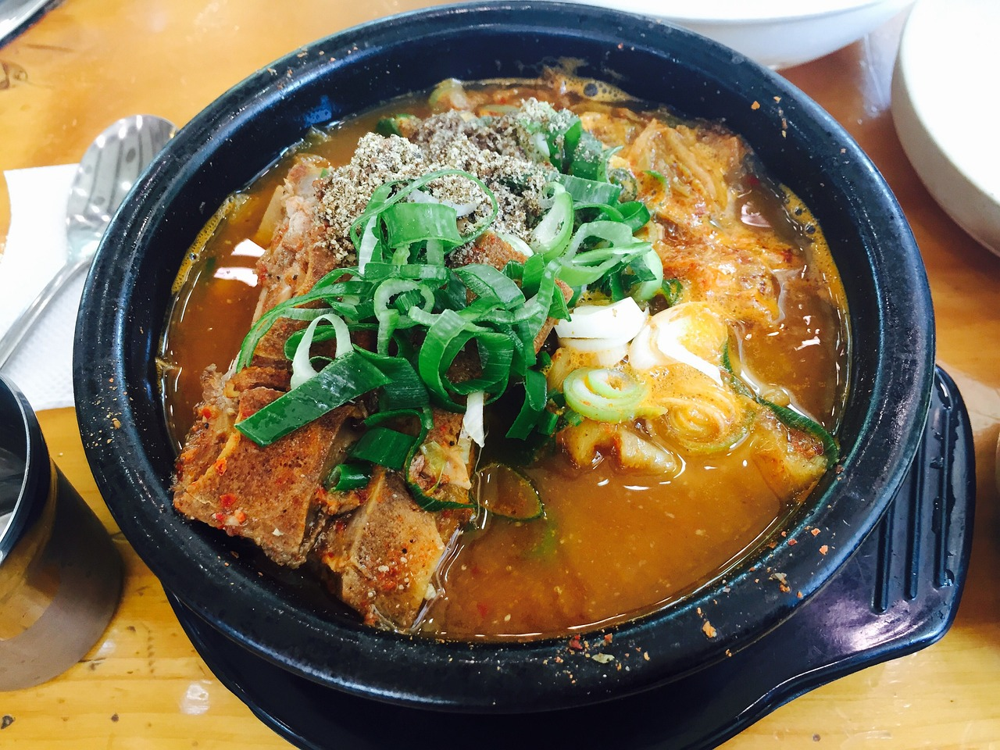
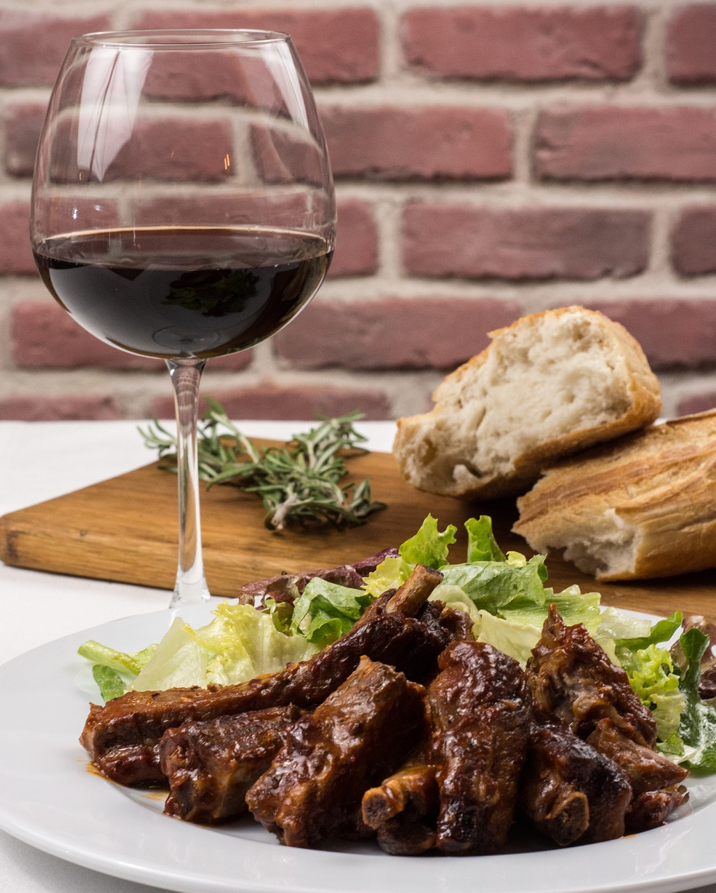
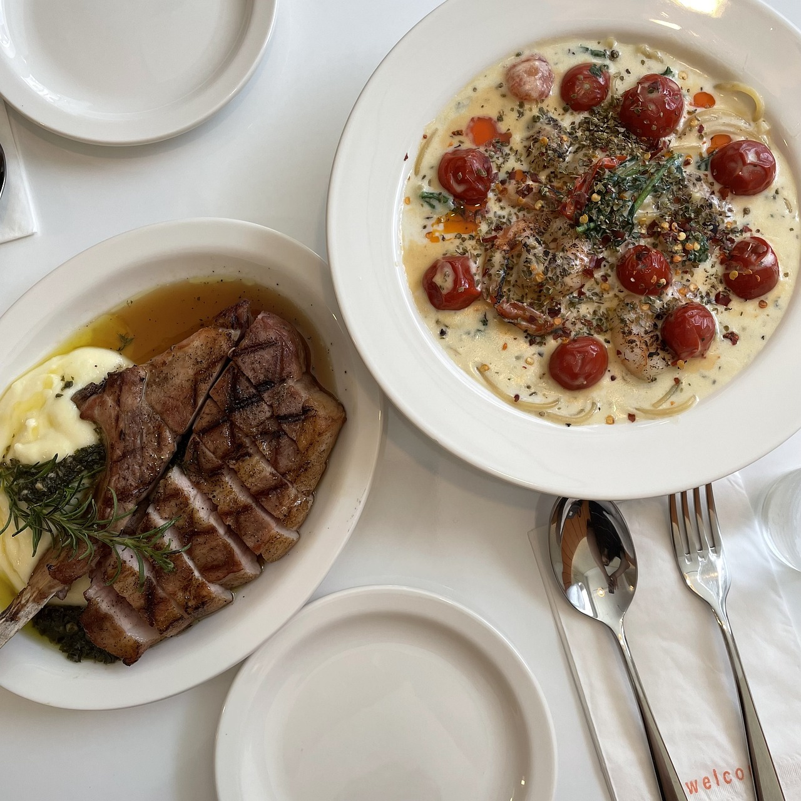

BEST
NEW
VEGETARIAN
고기
고기 레시피

불고기
달콤하고 짭짤한 불고기 레시피입니다. 풍부한 맛을 느낄 수 있습니다.

감자탕
부드럽고 진한 맛의 감자탕 레시피입니다. 가족과 함께하는 식사에 적합합니다.

돼지갈비
맛있게 양념된 돼지갈비 레시피입니다. 바비큐 파티에 최적입니다.

스테이크
완벽하게 구운 스테이크 레시피입니다. 특별한 날에 맞는 요리입니다.

립
소스와 함께 조리된 립 레시피입니다. 입에서 살살 녹는 맛을 제공합니다.